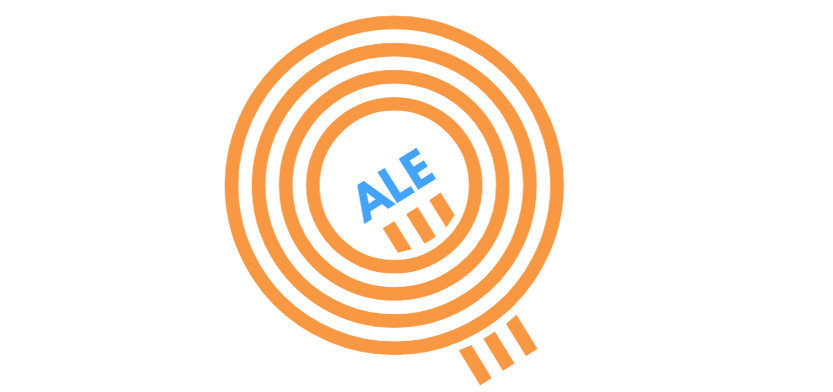

<!DOCTYPE html>
<html lang="en">
<head>
    <meta charset="UTF-8">
    <meta name="viewport" content="width=device-width, initial-scale=1.0">
    <title>Q-ALE Quality Assessment Tool</title>
    
    <!-- React & ReactDOM - PINNED VERSIONS -->
    <script crossorigin src="https://unpkg.com/react@18.2.0/umd/react.production.min.js"></script>
    <script crossorigin src="https://unpkg.com/react-dom@18.2.0/umd/react-dom.production.min.js"></script>
    
    <!-- Babel - PINNED VERSION -->
    <script src="https://unpkg.com/@babel/standalone@7.23.5/babel.min.js"></script>
    
    <!-- Tailwind CSS - PINNED VERSION -->
    <script src="https://cdn.tailwindcss.com/3.4.1"></script>
    
    <style>
        :root {
            --color-orange: #f99843;
            --color-blue: #43a4f9;
            --color-orange-dark: #e87c1f;
            --color-blue-dark: #2a8ce0;
        }
        
        @media print {
            body { background: white !important; }
            .print\:hidden { display: none !important; }
            input, textarea { border: 1px solid #ccc !important; print-color-adjust: exact; }
        }
        input:focus, textarea:focus { outline: 2px solid var(--color-blue); outline-offset: 2px; }
        
        /* Custom button styles with project colors */
        .btn-primary {
            background-color: var(--color-orange) !important;
            border-color: var(--color-orange) !important;
        }
        .btn-primary:hover {
            background-color: var(--color-orange-dark) !important;
            border-color: var(--color-orange-dark) !important;
            transform: translateY(-1px);
            box-shadow: 0 4px 12px rgba(249, 152, 67, 0.3);
        }
        
        .btn-secondary {
            background-color: var(--color-blue) !important;
            border-color: var(--color-blue) !important;
        }
        .btn-secondary:hover {
            background-color: var(--color-blue-dark) !important;
            border-color: var(--color-blue-dark) !important;
        }
        
        .text-project-blue {
            color: var(--color-blue) !important;
        }
        
        .text-project-orange {
            color: var(--color-orange) !important;
        }
        
        .bg-project-orange {
            background-color: var(--color-orange) !important;
        }
        
        .border-project-blue {
            border-color: var(--color-blue) !important;
        }
        .border-project-blue {
            border-color: var(--color-blue) !important;
        }
        
        .focus\:border-project-blue:focus {
            border-color: var(--color-blue) !important;
        }
        
        .loader { 
            border: 5px solid #f3f3f3; 
            border-top: 5px solid var(--color-blue); 
            border-radius: 50%; 
            width: 50px; 
            height: 50px; 
            animation: spin 1s linear infinite; 
            margin: 100px auto; 
        }
        @keyframes spin { 
            0% { transform: rotate(0deg); } 
            100% { transform: rotate(360deg); } 
        }
    </style>
</head>
<body>
    <div id="root"><div class="loader"></div></div>

    <script type="text/babel">
        const { useState, useEffect } = React;

        // Icons
        const CheckCircle = ({ className = "w-6 h-6" }) => <svg className={className} fill="none" stroke="currentColor" viewBox="0 0 24 24"><path strokeLinecap="round" strokeLinejoin="round" strokeWidth={2} d="M9 12l2 2 4-4m6 2a9 9 0 11-18 0 9 9 0 0118 0z" /></svg>;
        const AlertCircle = ({ className = "w-6 h-6" }) => <svg className={className} fill="none" stroke="currentColor" viewBox="0 0 24 24"><path strokeLinecap="round" strokeLinejoin="round" strokeWidth={2} d="M12 8v4m0 4h.01M21 12a9 9 0 11-18 0 9 9 0 0118 0z" /></svg>;
        const Award = ({ className = "w-6 h-6" }) => <svg className={className} fill="none" stroke="currentColor" viewBox="0 0 24 24"><circle cx="12" cy="8" r="7" strokeWidth={2}/><polyline points="8.21 13.89 7 23 12 20 17 23 15.79 13.88" strokeWidth={2}/></svg>;
        const Users = ({ className = "w-6 h-6" }) => <svg className={className} fill="none" stroke="currentColor" viewBox="0 0 24 24"><path strokeLinecap="round" strokeLinejoin="round" strokeWidth={2} d="M17 20h5v-2a3 3 0 00-5.356-1.857M17 20H7m10 0v-2c0-.656-.126-1.283-.356-1.857M7 20H2v-2a3 3 0 015.356-1.857M7 20v-2c0-.656.126-1.283.356-1.857m0 0a5.002 5.002 0 019.288 0M15 7a3 3 0 11-6 0 3 3 0 016 0zm6 3a2 2 0 11-4 0 2 2 0 014 0zM7 10a2 2 0 11-4 0 2 2 0 014 0z" /></svg>;
        const ChevronRight = ({ className = "w-6 h-6" }) => <svg className={className} fill="none" stroke="currentColor" viewBox="0 0 24 24"><path strokeLinecap="round" strokeLinejoin="round" strokeWidth={2} d="M9 5l7 7-7 7" /></svg>;
        const ChevronLeft = ({ className = "w-6 h-6" }) => <svg className={className} fill="none" stroke="currentColor" viewBox="0 0 24 24"><path strokeLinecap="round" strokeLinejoin="round" strokeWidth={2} d="M15 19l-7-7 7-7" /></svg>;
        const Download = ({ className = "w-6 h-6" }) => <svg className={className} fill="none" stroke="currentColor" viewBox="0 0 24 24"><path strokeLinecap="round" strokeLinejoin="round" strokeWidth={2} d="M4 16v1a3 3 0 003 3h10a3 3 0 003-3v-1m-4-4l-4 4m0 0l-4-4m4 4V4" /></svg>;
        const RotateCcw = ({ className = "w-6 h-6" }) => <svg className={className} fill="none" stroke="currentColor" viewBox="0 0 24 24"><polyline points="1 4 1 10 7 10" strokeLinecap="round" strokeLinejoin="round" strokeWidth={2}/><path d="M3.51 15a9 9 0 1 0 2.13-9.36L1 10" strokeLinecap="round" strokeLinejoin="round" strokeWidth={2}/></svg>;

const QALEQuestionnaire = () => {
  const [currentSection, setCurrentSection] = useState('intro');
  const [role, setRole] = useState('');
  const [orgProfile, setOrgProfile] = useState({
    name: '',           // NEW: For badge
    type: '',
    size: '',
    targetGroup: '',    // Now optional
    qaMaturity: ''      // Now optional
  });
  const [scores, setScores] = useState({});
  const [openAnswers, setOpenAnswers] = useState({});
  const [mitigationInputs, setMitigationInputs] = useState({
    reflection1: '',
    reflection2: '',
    reflection3: '',
    rootCauses: {},
    priorities: ['', '', '', '', ''],
    actions: {},
    managerCommitment: '',
    organiserCommitment: '',
    educatorCommitment: '',
    milestone3: '',
    milestone6: '',
    milestone9: '',
    milestone12: '',
    reviewDate: ''
  });
  const [dataSaved, setDataSaved] = useState(false);
  const [lastSaved, setLastSaved] = useState(null);

  // Google Sheets Configuration
  const GOOGLE_SHEET_WEB_APP_URL = 'https://script.google.com/macros/s/AKfycbwZTq_NWBzWUJJwzxApA4oIPe5SDMMrMh72D55ecUfW8T5UBOakkFpEsFMkFVmq30A/exec';

  // Load saved progress from localStorage on mount
  React.useEffect(() => {
    const saved = localStorage.getItem('qale-progress');
    if (saved) {
      try {
        const data = JSON.parse(saved);
        if (data.currentSection) setCurrentSection(data.currentSection);
        if (data.role) setRole(data.role);
        if (data.orgProfile) setOrgProfile(data.orgProfile);
        if (data.scores) setScores(data.scores);
        if (data.openAnswers) setOpenAnswers(data.openAnswers);
        if (data.mitigationInputs) setMitigationInputs(data.mitigationInputs);
        console.log('✅ Progress restored from localStorage');
      } catch (e) {
        console.error('Error loading saved progress:', e);
      }
    }
  }, []);

  // Autosave to localStorage whenever key state changes
  React.useEffect(() => {
    const dataToSave = {
      currentSection,
      role,
      orgProfile,
      scores,
      openAnswers,
      mitigationInputs,
      timestamp: new Date().toISOString()
    };
    localStorage.setItem('qale-progress', JSON.stringify(dataToSave));
    setLastSaved(new Date());
  }, [currentSection, role, orgProfile, scores, openAnswers, mitigationInputs]);

  // Function to save anonymized data to Google Sheets
  const saveToGoogleSheets = async (resultsData) => {
    try {
      const response = await fetch(GOOGLE_SHEET_WEB_APP_URL, {
        method: 'POST',
        mode: 'no-cors',
        headers: { 'Content-Type': 'application/json' },
        body: JSON.stringify(resultsData)
      });
      
      console.log('✅ Data saved to Google Sheets!');
      setDataSaved(true);
      return true;
    } catch (error) {
      console.error('Error saving to Google Sheets:', error);
      return false;
    }
  };

  // Export results as JSON
  const exportResultsJSON = () => {
    const gaps = getGaps();
    const topPerformers = getTopPerformers();
    const profile = determineQualityProfile();
    
    const exportData = {
      timestamp: new Date().toISOString(),
      organisation: orgProfile.name || 'Anonymous',
      orgProfile: orgProfile,
      role: role,
      qualityProfile: profile.title,
      scores: scores,
      averages: {
        universal: calculateAverage('universal'),
        role: role === 'organisation' ? calculateAverage('universal') :
              role === 'manager' ? calculateAverage('manager') :
              role === 'organiser' ? calculateAverage('organiser') :
              calculateAverage('educator'),
        overall: (Object.values(scores).reduce((a, b) => a + b, 0) / Object.values(scores).length).toFixed(2)
      },
      gaps: gaps.slice(0, 5),
      strengths: topPerformers.slice(0, 5),
      openAnswer: openAnswers[role] || '',
      mitigationPlan: mitigationInputs
    };

    const blob = new Blob([JSON.stringify(exportData, null, 2)], { type: 'application/json' });
    const url = URL.createObjectURL(blob);
    const a = document.createElement('a');
    a.href = url;
    a.download = `qale-results-${new Date().toISOString().split('T')[0]}.json`;
    a.click();
    URL.revokeObjectURL(url);
  };

  const roleEmojis = {
    organisation: '🏢',
    manager: '🏛️',
    organiser: '📋',
    educator: '💡'
  };

  const scoreDescriptions = {
    1: { label: 'The Ghost Town 👻', desc: 'No action has been taken' },
    2: { label: 'The Cowboy Era 🤠', desc: 'We do it sometimes, when we remember' },
    3: { label: 'The Rulebook 📘', desc: 'It is official. We have a policy' },
    4: { label: 'The Well-Oiled Machine ⚙️', desc: 'We do this like clockwork' },
    5: { label: 'The Jedi Master 🧘', desc: 'This is in our DNA' }
  };

  // Mitigation advice library
  const mitigationAdvice = {
    'u1': {
      title: 'Structured Learner Feedback',
      quickWin: 'Create a simple 3-question Google Form: "What worked? What didn\'t? What would help?"',
      lightVersion: 'End each session with 5-minute verbal feedback circle',
      nextLevel: 'Design a standardized feedback form and collect it after each module'
    },
    'u2': {
      title: 'Monitoring & Evaluation',
      quickWin: 'Create a simple Excel/Google Sheet template to track key metrics per cohort',
      lightVersion: 'Monthly team debrief: What worked? What didn\'t? Document 3 key points',
      nextLevel: 'Implement quarterly M&E review meetings with documented action points'
    },
    'u3': {
      title: 'Institutional Self-Evaluation',
      quickWin: 'Schedule one annual "Stop & Reflect" day with all staff',
      lightVersion: 'Quarterly check-ins: Are we doing what we said we\'d do?',
      nextLevel: 'Implement full PDCA cycle with documented processes'
    },
    'u6': {
      title: 'Documentation & Policies',
      acknowledge: 'Strong practice without documentation is common in ALE - you\'re not alone!',
      quickWin: 'Start with one policy that matters most (often GDPR or safety)',
      lightVersion: 'Create one-page summaries instead of lengthy documents',
      nextLevel: 'Build a shared drive folder structure for all key documents'
    },
    'm3': {
      title: 'GDPR & Data Protection',
      acknowledge: 'This feels bureaucratic, but it protects your learners and your organization',
      quickWin: 'Download a GDPR template and adapt it (2-3 hours work)',
      lightVersion: 'Create a one-page GDPR checklist and post it in the office',
      nextLevel: 'Annual GDPR review with all staff (30-minute session)'
    }
  };

  const questions = {
    universal: [
      { id: 'u1', text: 'Collection and analysis of structured learner feedback for every single program cycle', hint: 'Do we ask them, or do we just guess and hope they liked it?' },
      { id: 'u2', text: 'Execution of monitoring and evaluation for every program cycle with recorded results', hint: 'Do we write it down, or does the data disappear into the void?' },
      { id: 'u3', text: 'Implementation of institutional self-evaluation using recognised cycles (specifically PDCA)', hint: 'Do we Plan-Do-Check-Act, or do we just "Plan-Do-Panic"?' },
      { id: 'u4', text: 'Updating of learning programs after each cohort cycle, strictly based on documented evaluation evidence', hint: 'When we change a learning program, is it because of documented evidence or because it felt urgent at the time?' },
      { id: 'u5', text: 'Active involvement of relevant stakeholders (partners, community, alumni) in design and review', hint: 'Do we talk to the outside world, or do we live in a bubble?' },
      { id: 'u6', text: 'Maintenance of written policies, procedures, and records to support all quality processes', hint: 'The "Bus Factor": If the Manager left tomorrow, is everything written down?' }
    ],
    manager: [
      { id: 'm1', text: 'System for collecting learner feedback and modifying offerings based on results', hint: 'When they complain, do we actually change, or do we just nod politely and think "they just don\'t get it/ they want too much/ they are spoiled"?', value: 'Learner-Centricity' },
      { id: 'm2', text: 'Guidelines/frameworks supporting educators in creating "safe spaces"', hint: 'Do we give educators the tools to handle the room, or throw them in the water?', value: 'Learner-Centricity' },
      { id: 'm3', text: 'Conduct an annual cross-program review to improve the learner-centric approach', hint: 'Do we step back once a year to look at the big picture?', value: 'Learner-Centricity' },
      { id: 'm4', text: 'Integration of participatory and dialogical processes into the daily working culture', hint: 'Do we practice participation in our own "boring" staff meetings?', value: 'Participation & Dialogue' },
      { id: 'm5', text: 'Involvement of the community and stakeholders when creating or reviewing programmes', hint: 'Is cooperation in our nature or "a must"?', value: 'Participation & Dialogue' },
      { id: 'm6', text: 'Existence and adherence to communication guidelines for all staff and partners', hint: 'Do we have rules so nobody feels left out?', value: 'Participation & Dialogue' },
      { id: 'm7', text: 'Active management of GDPR policy and data protection measures', hint: 'Is personal data locked up, or living its best life on sticky notes and shared drives?', value: 'Ethics' },
      { id: 'm8', text: 'Annual review and publication of organisational values and ethical principles', hint: 'Are the values on the wall actually lived, or just a nice decoration?', value: 'Ethics' },
      { id: 'm9', text: 'Documentation and public reporting of the use of funding/financial records', hint: 'We are transparent. We know where every Euro went.', value: 'Ethics' },
      { id: 'm10', text: 'Publication of written recruitment procedures and provision of feedback to candidates', hint: 'Do we treat applicants with respect, even the ones we don\'t hire?', value: 'Ethics' },
      { id: 'm11', text: 'Provision of an annual training cycle for trainers (expert, andragogical, ethical)', hint: 'Do our trainers get smarter every year, or are they recycling skills from 2015?', value: 'Ethics' },
      { id: 'm12', text: 'Regular use of institutional self-assessment (e.g., PDCA cycle)', hint: 'Do we look in the mirror regularly?', value: 'Relevance & Impact' },
      { id: 'm13', text: 'Conduct a needs analysis for programmes and update it after each cohort', hint: 'Do we research what people need, or do we just copy-paste last year\'s course?', value: 'Relevance & Impact' },
      { id: 'm14', text: 'Tracking of short- and medium-term learning outcomes', hint: 'Do they get jobs? Do they get happier? Do they contribute to society and the environment? We try to find out.', value: 'Relevance & Impact' },
      { id: 'm15', text: 'Collection of at least one form of follow-up evidence to assess long-term impact', hint: 'Do we check in on them a year later?', value: 'Relevance & Impact' },
      { id: 'm16', text: 'Annual review of anti-discrimination guidelines for recruitment', hint: 'Is anti-discrimination in recruitment a shared mindset, or just a yearly paperwork ritual?', value: 'Equity & Inclusion' },
      { id: 'm17', text: 'Accessibility and adaptation of access for all learners with diverse needs', hint: 'Can a wheelchair get in? Can someone with dyslexia read our font?', value: 'Equity & Inclusion' },
      { id: 'm18', text: 'Training of staff on inclusive, non-discriminatory practices', hint: 'Does staff really know how to include, or did they just watch a 5-minute video?', value: 'Equity & Inclusion' },
      { id: 'm19', text: 'Periodic review of participation and outcomes to identify potential inequities', hint: 'Do we check who ISN\'T showing up?', value: 'Equity & Inclusion' },
      { id: 'm20', text: 'Integration of sustainability goals into mission, strategy, and daily operations', hint: 'Is green thinking part of the plan, or just an afterthought? Do we also take into account other forms of sustainability?', value: 'Sustainability' },
      { id: 'm21', text: 'Financial planning ensures stability beyond individual project cycles', hint: 'Are we solid, or are we worried about funding every month?', value: 'Sustainability' },
      { id: 'm22', text: 'Annual review of written environmental policy for resources (travel, office)', hint: 'Do we track our carbon footprint, or just ignore it?', value: 'Sustainability' },
      { id: 'm23', text: 'HR guidelines fostering a "healthy environment" (work-life balance/well-being)', hint: 'Do we preach "wellness" but send emails at 10 PM?', value: 'Sustainability' },
      { id: 'm24', text: 'Promotion of sustainable behaviours among staff and learners', hint: 'Do we walk the talk?', value: 'Sustainability' }
    ],
    organiser: [
      { id: 'c1', text: 'Design of courses based on monitored, actual needs of learners', hint: 'Did we build this because they need it, or because WE think it\'s cool?', value: 'Learner-Centricity' },
      { id: 'c2', text: 'Provision of flexibly organised learning pathways for different life situations', hint: 'Is the schedule as rigid as stone, or can a busy single parent actually attend?', value: 'Learner-Centricity' },
      { id: 'c3', text: 'System for modifying the learning offer based on collected feedback', hint: 'Are we agile enough to pivot when things aren\'t working?', value: 'Learner-Centricity' },
      { id: 'c4', text: 'Involvement of stakeholders in creating specific learning programmes', hint: 'Do we co-create, or do we just deliver?', value: 'Participation & Dialogue' },
      { id: 'c5', text: 'Use of peer review as a structured method for evaluation', hint: 'Do we let colleagues critique our work, or are we too proud for feedback?', value: 'Participation & Dialogue' },
      { id: 'c6', text: 'Documentation, transparency, and fairness of learning assessment methods', hint: 'Are the rules of the game clear to everyone from Day 1?', value: 'Ethics' },
      { id: 'c7', text: 'Confidential mechanism for learner feedback (free from concern of reprisal)', hint: 'Can a learner say "this is bad" without fear?', value: 'Ethics' },
      { id: 'c8', text: 'Accuracy and evidence-based nature of educational content, with active bias awareness', hint: 'Is it fact-checked, or is it just "trust me, we are great"?', value: 'Ethics' },
      { id: 'c9', text: 'Definition of learning outcomes at the program design stage. Using clear and diverse assessment methods for learning outcomes', hint: 'Do we know what success looks like before we start?', value: 'Relevance & Impact' },
      { id: 'c10', text: 'Recording of M&E results to allow comparison across cohorts', hint: 'Can we prove we are getting better over time?', value: 'Relevance & Impact' },
      { id: 'c11', text: 'Alignment of content and timing with real-life contexts of adult learners', hint: 'Does this work on a Monday morning, or is it just nice theory?', value: 'Relevance & Impact' },
      { id: 'c12', text: 'Involvement of learners in co-designing and reviewing activities', hint: 'Do we build it WITH them, or only FOR them?', value: 'Learner-Centricity' },
      { id: 'c13', text: 'Active challenging of prejudice and fostering a respectful culture', hint: 'If someone says something biased, do we have a plan, or does it get awkward?', value: 'Equity & Inclusion' },
      { id: 'c14', text: 'Co-design of programmes with learners to reflect diverse perspectives', hint: 'Do our case studies represent everyone?', value: 'Equity & Inclusion' },
      { id: 'c15', text: 'Maintenance of partnerships and networks beyond the project lifetime', hint: 'Do we keep the relationship alive after the money runs out?', value: 'Sustainability' },
      { id: 'c16', text: 'Reuse and reinvestment of resources/materials for new initiatives', hint: 'Do we reinvent the wheel every time, or do we reuse our best stuff?', value: 'Sustainability' }
    ],
    educator: [
      { id: 'e1', text: 'Use of andragogical tools to create a safe space (free from judgment/harm)', hint: 'Is the vibe in the room safe for everyone?', value: 'Learner-Centricity' },
      { id: 'e2', text: 'Use of reflective thinking and dialogue to foster curiosity and autonomy', hint: 'Do I invite them to think, or do I tell them what to think?', value: 'Learner-Centricity' },
      { id: 'e3', text: 'Integration of learner experiences and provision of experiential learning', hint: 'Do I use the wisdom in the room, or do I act like the only expert?', value: 'Learner-Centricity' },
      { id: 'e4', text: 'Use of peer learning as an andragogical method', hint: 'Do I let them teach and inspire each other?', value: 'Participation & Dialogue' },
      { id: 'e5', text: 'Encouragement of critical and constructive thinking in the group', hint: 'Do I love it when they challenge me? (Even if it\'s annoying?)', value: 'Participation & Dialogue' },
      { id: 'e6', text: 'Assurance of open communication and dialogue in all activities', hint: 'Is the dialogue real, or are we just following a script?', value: 'Participation & Dialogue' },
      { id: 'e7', text: 'Application of fair and transparent assessment methods', hint: 'Do I assess with criteria everyone knows, or with instincts I trust?', value: 'Ethics' },
      { id: 'e8', text: 'Presenting topics and different perspectives related to them (values, opinions, ideologies, etc.) clearly and fairly, supporting learners to develop their own meaning', hint: 'Am I aware of my own values and world views that might affect my teaching? Are all perspectives truly welcome in my class?', value: 'Ethics' },
      { id: 'e9', text: 'Respect and protection of intellectual property in materials', hint: 'Do I credit my sources, or do I pretend I invented everything?', value: 'Ethics' },
      { id: 'e10', text: 'Alignment of methods and timing with learners\' real-life constraints', hint: 'Am I reading the room? If they are tired, do we still push through 50 slides?', value: 'Relevance & Impact' },
      { id: 'e11', text: 'Collection of structured learner feedback during delivery for adaptation', hint: 'If they are lost, do I catch it now, or wait for the bad review at the end?', value: 'Learner-Centricity' },
      { id: 'e12', text: 'Actively challenging and facilitating the resolution of prejudice/discrimination if it arises in the group', hint: 'Do I act as the guardian of the vibe? Do I shut down discrimination immediately?', value: 'Equity & Inclusion' },
      { id: 'e13', text: 'Support for individuals in vulnerable situations to ensure a respectful culture', hint: 'Do I protect the vulnerable in the group?', value: 'Equity & Inclusion' },
      { id: 'e14', text: 'Responsible management of training venues and materials (reducing waste)', hint: 'Am I printing a forest of paper that ends up in the bin?', value: 'Sustainability' },
      { id: 'e15', text: 'Inclusion of sustainability and responsible citizenship teaching and learning methods and practices', hint: 'Do I help them think about the future?', value: 'Sustainability' },
      { id: 'e16', text: 'Documentation of andragogical methods appropriate to learning objectives', hint: 'Do I record what worked so I don\'t have to guess next time?', value: 'Relevance & Impact' }
    ]
  };

  const openQuestions = {
    organisation: "What is the biggest challenge in implementing quality assurance in your organisation?",
    manager: "What is currently the biggest quality risk in our organisation?",
    organiser: "What part of programme design causes the most recurring problems?",
    educator: "What usually blocks you from applying your best teaching practice?"
  };

  // Quality Profile Types
  const qualityProfiles = {
    foundationBuilder: {
      title: 'The Foundation Builder',
      emoji: '🏗️',
      message: 'You\'re laying the groundwork! Your focus on building core QA mechanisms will create a solid foundation for everything else. Every Jedi Master started here.',
      color: 'bg-orange-100 border-orange-500'
    },
    participationChampion: {
      title: 'The Participation Champion',
      emoji: '🤝',
      message: 'Your strength in dialogue and participation creates the heartbeat of quality learning! You\'re proving that quality isn\'t just about paperwork - it\'s about people.',
      color: 'bg-blue-100 border-project-blue'
    },
    equityWarrior: {
      title: 'The Equity Warrior',
      emoji: '⚖️',
      message: 'You\'re walking the talk on inclusion! Your commitment to removing barriers and welcoming diversity is transforming lives. Keep championing access for all.',
      color: 'bg-purple-100 border-purple-500'
    },
    sustainabilityPioneer: {
      title: 'The Sustainability Pioneer',
      emoji: '🌱',
      message: 'You\'re thinking beyond today! Your multi-dimensional sustainability approach ensures your organization and the planet have a future. Respect.',
      color: 'bg-green-100 border-green-500'
    },
    learnerWhisperer: {
      title: 'The Learner Whisperer',
      emoji: '💙',
      message: 'You\'ve truly understood what it means to put learners first! Your ability to foster agency and empowerment is exactly what adult education needs.',
      color: 'bg-indigo-100 border-indigo-500'
    },
    impactMaker: {
      title: 'The Impact Maker',
      emoji: '🎯',
      message: 'You\'re not just teaching - you\'re changing lives! Your focus on relevance and measurable outcomes proves that quality education creates real transformation.',
      color: 'bg-red-100 border-red-500'
    },
    ethicsGuardian: {
      title: 'The Ethics Guardian',
      emoji: '🛡️',
      message: 'Your integrity shines through! In a world of shortcuts, you\'re proving that doing things right, fair, and transparently is the only way to build lasting trust.',
      color: 'bg-gray-100 border-gray-500'
    },
    balancedPractitioner: {
      title: 'The Balanced Practitioner',
      emoji: '⚙️',
      message: 'You\'re the real deal - walking the talk across all quality dimensions! Your holistic approach shows mature understanding of what quality really means.',
      color: 'bg-teal-100 border-teal-500'
    },
    honestRealist: {
      title: 'The Honest Realist',
      emoji: '💪',
      message: 'Your honesty is your superpower! By acknowledging both strengths and gaps, you\'re already halfway to excellence. This self-awareness is what separates good organizations from great ones.',
      color: 'bg-amber-100 border-amber-500'
    },
    risingStar: {
      title: 'The Rising Star',
      emoji: '⭐',
      message: 'Every expert was once a beginner! You\'ve taken the hardest step - honest self-assessment. With your gaps identified, you\'re now ready to grow. Welcome to the quality journey!',
      color: 'bg-yellow-100 border-yellow-500'
    },
    qualityChampion: {
      title: 'The Quality Champion',
      emoji: '🏆',
      message: 'You\'re setting the standard! Your organization embodies what quality adult education looks like. Now, share your knowledge - other organizations need mentors like you.',
      color: 'bg-yellow-100 border-yellow-500'
    },
    jediMaster: {
      title: 'The Jedi Master in Bloom',
      emoji: '🧘✨',
      message: 'This is impressive! You\'ve reached mastery in multiple dimensions. Your practices could be case studies. Consider documenting and sharing your approach as good practice examples for the sector.',
      color: 'bg-violet-100 border-violet-500'
    }
  };

  const handleScoreChange = (questionId, score) => {
    setScores(prev => ({ ...prev, [questionId]: score }));
  };

  const calculateAverage = (sectionKey) => {
    const sectionQuestions = questions[sectionKey];
    const sectionScores = sectionQuestions
      .map(q => scores[q.id])
      .filter(s => s !== undefined);
    
    if (sectionScores.length === 0) return 0;
    return (sectionScores.reduce((a, b) => a + b, 0) / sectionScores.length).toFixed(1);
  };

  const getGaps = () => {
    const gaps = [];
    Object.keys(questions).forEach(section => {
      questions[section].forEach(q => {
        const score = scores[q.id];
        if (score && score <= 2) {
          gaps.push({ ...q, score, section });
        }
      });
    });
    return gaps.sort((a, b) => a.score - b.score);
  };

  const getTopPerformers = () => {
    const performers = [];
    Object.keys(questions).forEach(section => {
      questions[section].forEach(q => {
        const score = scores[q.id];
        if (score && score >= 4) {
          performers.push({ ...q, score, section });
        }
      });
    });
    return performers.sort((a, b) => b.score - a.score);
  };

  const determineQualityProfile = () => {
    const universalAvg = parseFloat(calculateAverage('universal'));
    const allScores = Object.values(scores).filter(s => s !== undefined);
    const overallAvg = allScores.reduce((a, b) => a + b, 0) / allScores.length;
    
    const valueScores = {
      'Participation & Dialogue': [],
      'Equity & Inclusion': [],
      'Sustainability': [],
      'Learner-Centricity': [],
      'Relevance & Impact': [],
      'Ethics': []
    };

    Object.keys(questions).forEach(section => {
      questions[section].forEach(q => {
        if (q.value && scores[q.id]) {
          valueScores[q.value].push(scores[q.id]);
        }
      });
    });

    const valueAverages = {};
    Object.keys(valueScores).forEach(value => {
      if (valueScores[value].length > 0) {
        valueAverages[value] = valueScores[value].reduce((a, b) => a + b, 0) / valueScores[value].length;
      }
    });

    const fivesCount = allScores.filter(s => s === 5).length;
    const foursCount = allScores.filter(s => s >= 4).length;
    const lowScoresCount = allScores.filter(s => s <= 2).length;
    const consistency = Math.max(...allScores) - Math.min(...allScores);

    if (fivesCount >= 5) return qualityProfiles.jediMaster;
    if (overallAvg >= 4.2 && consistency <= 1.5) return qualityProfiles.qualityChampion;
    if (role === 'organisation' && universalAvg < 3 && overallAvg < 3.5) return qualityProfiles.foundationBuilder;
    if (overallAvg < 2.8 && allScores.length > 10) return qualityProfiles.risingStar;
    if (consistency <= 1 && overallAvg >= 3.2) return qualityProfiles.balancedPractitioner;
    if (lowScoresCount >= 3 && foursCount >= 3) return qualityProfiles.honestRealist;

    const topValue = Object.keys(valueAverages).length > 0 
      ? Object.keys(valueAverages).reduce((a, b) => 
          valueAverages[a] > valueAverages[b] ? a : b
        )
      : null;

    if (topValue && valueAverages[topValue] >= 4) {
      if (topValue === 'Participation & Dialogue') return qualityProfiles.participationChampion;
      if (topValue === 'Equity & Inclusion') return qualityProfiles.equityWarrior;
      if (topValue === 'Sustainability') return qualityProfiles.sustainabilityPioneer;
      if (topValue === 'Learner-Centricity') return qualityProfiles.learnerWhisperer;
      if (topValue === 'Relevance & Impact') return qualityProfiles.impactMaker;
      if (topValue === 'Ethics') return qualityProfiles.ethicsGuardian;
    }

    return qualityProfiles.balancedPractitioner;
  };

  const getEarnedBadges = () => {
    const badges = [];
    const allScores = Object.values(scores).filter(s => s !== undefined);
    const overallAvg = allScores.reduce((a, b) => a + b, 0) / allScores.length;

    const valueScores = {
      'Participation & Dialogue': [],
      'Equity & Inclusion': [],
      'Sustainability': [],
      'Learner-Centricity': [],
      'Relevance & Impact': [],
      'Ethics': []
    };

    Object.keys(questions).forEach(section => {
      questions[section].forEach(q => {
        if (q.value && scores[q.id]) {
          valueScores[q.value].push(scores[q.id]);
        }
      });
    });

    const valueAverages = {};
    Object.keys(valueScores).forEach(value => {
      if (valueScores[value].length > 0) {
        valueAverages[value] = valueScores[value].reduce((a, b) => a + b, 0) / valueScores[value].length;
      }
    });

    badges.push({
      title: 'Q-ALE Verified',
      emoji: '✅',
      description: 'Completed comprehensive quality self-assessment',
      color: 'blue'
    });

    if (overallAvg >= 4.0) {
      badges.push({
        title: 'Q-ALE Quality Champion',
        emoji: '🏆',
        description: 'Overall excellence across all quality dimensions',
        color: 'gold'
      });
    }

    if (valueAverages['Learner-Centricity'] >= 4.0) {
      badges.push({
        title: 'Learner-Centered Excellence',
        emoji: '💙',
        description: 'Exceptional commitment to learner empowerment',
        color: 'indigo'
      });
    }

    if (valueAverages['Equity & Inclusion'] >= 4.0) {
      badges.push({
        title: 'Equity & Inclusion Leader',
        emoji: '⚖️',
        description: 'Champion of diversity and accessible learning',
        color: 'purple'
      });
    }

    if (valueAverages['Sustainability'] >= 4.0) {
      badges.push({
        title: 'Sustainability Pioneer',
        emoji: '🌱',
        description: 'Leading sustainable practices in adult education',
        color: 'green'
      });
    }

    if (valueAverages['Participation & Dialogue'] >= 4.0) {
      badges.push({
        title: 'Participation Excellence',
        emoji: '🤝',
        description: 'Master of dialogical and participatory processes',
        color: 'blue'
      });
    }

    if (valueAverages['Ethics'] >= 4.0) {
      badges.push({
        title: 'Ethics Guardian',
        emoji: '🛡️',
        description: 'Commitment to integrity and transparency',
        color: 'gray'
      });
    }

    if (valueAverages['Relevance & Impact'] >= 4.0) {
      badges.push({
        title: 'Impact Maker',
        emoji: '🎯',
        description: 'Creating meaningful, measurable change',
        color: 'red'
      });
    }

    return badges;
  };

  const generateBadgeSVG = (badge, orgName) => {
    const colorMap = {
      blue: { bg: '#3B82F6', text: '#FFFFFF' },
      gold: { bg: '#F59E0B', text: '#FFFFFF' },
      indigo: { bg: '#6366F1', text: '#FFFFFF' },
      purple: { bg: '#A855F7', text: '#FFFFFF' },
      green: { bg: '#10B981', text: '#FFFFFF' },
      gray: { bg: '#6B7280', text: '#FFFFFF' },
      red: { bg: '#EF4444', text: '#FFFFFF' }
    };

    const colors = colorMap[badge.color] || colorMap.blue;
    const date = new Date().toLocaleDateString('en-US', { month: 'short', year: 'numeric' });

    return `<svg width="400" height="200" xmlns="http://www.w3.org/2000/svg">
      <defs>
        <linearGradient id="grad-${badge.color}" x1="0%" y1="0%" x2="100%" y2="100%">
          <stop offset="0%" style="stop-color:${colors.bg};stop-opacity:1" />
          <stop offset="100%" style="stop-color:${colors.bg};stop-opacity:0.8" />
        </linearGradient>
      </defs>
      <rect width="400" height="200" rx="15" fill="url(#grad-${badge.color})" />
      <rect x="5" y="5" width="390" height="190" rx="12" fill="none" stroke="#FFFFFF" stroke-width="2" opacity="0.3" />
      <text x="20" y="35" font-family="Arial, sans-serif" font-size="18" font-weight="bold" fill="${colors.text}">Q-ALE</text>
      <text x="200" y="80" font-size="48" text-anchor="middle">${badge.emoji}</text>
      <text x="200" y="115" font-family="Arial, sans-serif" font-size="20" font-weight="bold" fill="${colors.text}" text-anchor="middle">${badge.title}</text>
      <text x="200" y="140" font-family="Arial, sans-serif" font-size="14" fill="${colors.text}" text-anchor="middle" opacity="0.9">${orgName || 'Your Organization'}</text>
      <text x="200" y="170" font-family="Arial, sans-serif" font-size="12" fill="${colors.text}" text-anchor="middle" opacity="0.7">${date}</text>
    </svg>`;
  };

  const downloadBadge = (badge) => {
    const orgName = orgProfile.name || 'Your Organization';
    const svg = generateBadgeSVG(badge, orgName);
    const blob = new Blob([svg], { type: 'image/svg+xml' });
    const url = URL.createObjectURL(blob);
    const a = document.createElement('a');
    a.href = url;
    a.download = `Q-ALE-Badge-${badge.title.replace(/\s+/g, '-')}.svg`;
    document.body.appendChild(a);
    a.click();
    document.body.removeChild(a);
    URL.revokeObjectURL(url);
  };

  const renderIntro = () => (
    <div className="max-w-3xl mx-auto space-y-6">
      {/* EU Logo and Disclaimer */}
      <div className="bg-white rounded-lg shadow-md p-6 space-y-4">
        <div className="flex items-center justify-center mb-4">
          
        </div>
        <div className="text-sm text-gray-700 space-y-2">
          <p>
            <strong>Q-ALE Quality Assurance Model</strong> is developed in the Erasmus+ project 
            Quality Assurance in non-formal Adult Learning and Education.
          </p>
          <p>
            Funded by the European Union. Views and opinions expressed are however those of the author(s) 
            only and do not necessarily reflect those of the European Union or the European Education and 
            Culture Executive Agency (EACEA). Neither the European Union nor EACEA can be held responsible for them.
          </p>
        </div>
      </div>

      <div className="text-center space-y-4">
        <div className="flex justify-center">
          
        </div>
        <h1 className="text-4xl font-bold text-gray-900">Q-ALE Quality Check</h1>
        <p className="text-xl text-gray-600">The honest, human-friendly quality assessment for adult education</p>
      </div>

      <div className="bg-blue-50 border-l-4 p-6 rounded-r-lg" style={{borderColor: 'var(--color-blue)'}}>
        <h3 className="font-bold text-lg mb-2">Welcome! 👋</h3>
        <p className="text-gray-700 mb-4">
          This isn't about ticking boxes or satisfying bureaucrats. This is about building a Culture of Quality 
          that makes sense, makes us better, and keeps us from going crazy.
        </p>
        <p className="text-gray-700">
          <strong>Be honest.</strong> This tool is for improvement, not judgment. If you laugh uncomfortably 
          while reading a question, the score is probably a 2. 😅
        </p>
      </div>

      <div className="bg-white rounded-lg shadow-md p-6 space-y-4">
        <h3 className="font-bold text-lg mb-4">First, tell us about yourself:</h3>
        
        <div>
          <label className="block text-sm font-medium text-gray-700 mb-2">Your primary role:</label>
          <div className="space-y-2">
            {[
              { value: 'organisation', label: 'Organisation Representatives 🏢', desc: 'Overall quality assurance and institutional processes' },
              { value: 'manager', label: 'Manager 🏛️', desc: 'Keeping the lights on, rules legal, and people sane' },
              { value: 'organiser', label: 'Course Designer 📋', desc: 'Turning chaos into a curriculum' },
              { value: 'educator', label: 'Educator 💡', desc: 'Holding the room and sparking the brain and heart' }
            ].map(r => (
              <button
                key={r.value}
                onClick={() => setRole(r.value)}
                className={`w-full text-left p-4 rounded-lg border-2 transition-all ${
                  role === r.value 
                    ? 'bg-blue-50' 
                    : 'border-gray-200 hover:border-gray-300'
                }`}
                style={role === r.value ? {borderColor: 'var(--color-orange)'} : {}}
              >
                <div className="font-medium">{r.label}</div>
                <div className="text-sm text-gray-600">{r.desc}</div>
              </button>
            ))}
          </div>
        </div>

        {/* Autosave indicator */}
        {lastSaved && (
          <div className="text-sm text-green-600 text-center">
            ✓ Progress automatically saved {lastSaved.toLocaleTimeString()}
          </div>
        )}

        <div>
          <label className="block text-sm font-medium text-gray-700 mb-2">
            Organisation name <span className="text-gray-500 text-sm">(optional, for your badge of honour)</span>
          </label>
          <input 
            type="text"
            value={orgProfile.name}
            onChange={(e) => setOrgProfile({...orgProfile, name: e.target.value})}
            placeholder="e.g., Learning Centre Vienna"
            className="w-full p-2 border border-gray-300 rounded-lg"
          />
        </div>

        <div className="grid grid-cols-2 gap-4">
          <div>
            <label className="block text-sm font-medium text-gray-700 mb-2">Organisation type:</label>
            <select 
              value={orgProfile.type}
              onChange={(e) => setOrgProfile({...orgProfile, type: e.target.value})}
              className="w-full p-2 border border-gray-300 rounded-lg"
            >
              <option value="">Select...</option>
              <option value="ngo">NGO</option>
              <option value="public">Public</option>
              <option value="private">Private</option>
              <option value="other">Other</option>
            </select>
          </div>

          <div>
            <label className="block text-sm font-medium text-gray-700 mb-2">Organisation size:</label>
            <select 
              value={orgProfile.size}
              onChange={(e) => setOrgProfile({...orgProfile, size: e.target.value})}
              className="w-full p-2 border border-gray-300 rounded-lg"
            >
              <option value="">Select...</option>
              <option value="1-5">1-5 staff</option>
              <option value="6-20">6-20 staff</option>
              <option value="21-50">21-50 staff</option>
              <option value="50+">50+ staff</option>
            </select>
          </div>
        </div>

        <div>
          <label className="block text-sm font-medium text-gray-700 mb-2">
            Main target group(s) <span className="text-gray-500 text-sm">(optional)</span>
          </label>
          <input 
            type="text"
            value={orgProfile.targetGroup}
            onChange={(e) => setOrgProfile({...orgProfile, targetGroup: e.target.value})}
            placeholder="e.g., adult learners, migrants, unemployed..."
            className="w-full p-2 border border-gray-300 rounded-lg"
          />
        </div>
      </div>

      <button
        onClick={() => {
          if (role === 'organisation') {
            setCurrentSection('universal');
          } else {
            setCurrentSection('role');
          }
        }}
        disabled={!role || !orgProfile.type || !orgProfile.size}
        className="w-full text-white py-4 px-6 rounded-lg font-medium text-lg disabled:bg-gray-300 disabled:cursor-not-allowed transition-all flex items-center justify-center gap-2 hover:transform hover:translate-y-[-2px]"
        style={{backgroundColor: (!role || !orgProfile.type || !orgProfile.size) ? '' : 'var(--color-orange)'}}
        onMouseOver={(e) => {
          if (role && orgProfile.type && orgProfile.size) {
            e.currentTarget.style.backgroundColor = 'var(--color-orange-dark)';
            e.currentTarget.style.boxShadow = '0 4px 12px rgba(249, 152, 67, 0.3)';
          }
        }}
        onMouseOut={(e) => {
          if (role && orgProfile.type && orgProfile.size) {
            e.currentTarget.style.backgroundColor = 'var(--color-orange)';
            e.currentTarget.style.boxShadow = '';
          }
        }}
      >
        Let's Begin! <ChevronRight />
      </button>
      <p className="text-sm text-gray-500 text-center">
        Your progress is automatically saved as you go
      </p>
    </div>
  );

  const renderQuestionSection = (sectionKey, title, subtitle) => {
    const sectionQuestions = questions[sectionKey];
    const isComplete = sectionQuestions.every(q => scores[q.id]);
    
    return (
      <div className="max-w-4xl mx-auto space-y-6">
        <div className="flex items-center gap-4">
          <div className="text-5xl">{sectionKey === 'universal' ? '☂️' : roleEmojis[sectionKey]}</div>
          <div>
            <h2 className="text-3xl font-bold text-gray-900">{title}</h2>
            <p className="text-gray-600">{subtitle}</p>
          </div>
        </div>

        {sectionKey === 'universal' && (
          <>
            <div className="bg-blue-50 border-l-4 p-6 rounded-r-lg mb-4" style={{borderColor: 'var(--color-blue)'}}>
              <p className="text-gray-800">
                <strong>To be completed by: Manager (M) with Course Designer (C).</strong>
              </p>
              <p className="text-gray-700 mt-2">
                These are the vegetables of QA. You have to eat them before you get dessert.
              </p>
            </div>
            <div className="bg-red-50 border-l-4 border-red-500 p-4 rounded-r-lg">
              <p className="font-medium text-red-800">
                ⚠️ <strong>Warning:</strong> If you score low (1 or 2) here, stop. Fix this first. 
                You cannot build a house on quicksand.
              </p>
              <p className="text-red-700 mt-2 text-sm">
                <strong>What now:</strong> Start with the core content of this Code of Conduct, go through it and see which aspects 
                you are already tackling, perhaps informally and without structured procedures. Organise some focus groups on the 
                general idea of building a QAS in the organisation with the staff, and start drafting together a general QA strategy 
                relevant for you.
              </p>
            </div>
          </>
        )}

        <div className="bg-gradient-to-r from-gray-50 to-gray-100 rounded-lg p-4 border border-gray-300">
          <h4 className="font-bold text-sm text-gray-700 mb-3">Rating Scale:</h4>
          <div className="grid grid-cols-5 gap-2">
            {[1, 2, 3, 4, 5].map(score => (
              <div key={score} className="text-center">
                <div className={`text-2xl font-bold mb-1 ${
                  score <= 2 ? 'text-red-600' : score === 3 ? 'text-yellow-600' : 'text-green-600'
                }`}>
                  {score}
                </div>
                <div className="text-xs leading-tight text-gray-600">
                  {scoreDescriptions[score].label}
                </div>
              </div>
            ))}
          </div>
        </div>

        <div className="space-y-4">
          {sectionQuestions.map((question, idx) => (
            <div key={question.id} className="bg-white rounded-lg shadow-md p-6 space-y-4">
              <div className="flex items-start gap-3">
                <div className="flex-shrink-0 w-8 h-8 bg-blue-100 rounded-full flex items-center justify-center text-blue-700 font-bold">
                  {idx + 1}
                </div>
                <div className="flex-1">
                  <p className="font-medium text-lg text-gray-900">{question.text}</p>
                  {question.hint && (
                    <p className="text-base text-green-700 mt-2 bg-green-50 p-3 rounded-lg border-l-4 border-green-500">
                      👉 {question.hint}
                    </p>
                  )}
                  {question.value && (
                    <p className="text-sm font-medium text-blue-600 mt-2 inline-block">
                      💎 {question.value}
                    </p>
                  )}
                </div>
              </div>

              <div className="flex gap-2 mt-4">
                {[1, 2, 3, 4, 5].map(score => (
                  <button
                    key={score}
                    onClick={() => handleScoreChange(question.id, score)}
                    className={`flex-1 p-4 rounded-lg border-2 transition-all ${
                      scores[question.id] === score 
                        ? score <= 2 
                          ? 'border-red-500 bg-red-50'
                          : score === 3
                          ? 'border-yellow-500 bg-yellow-50'
                          : 'border-green-500 bg-green-50'
                        : 'border-gray-200 hover:border-gray-300'
                    }`}
                  >
                    <div className="text-center">
                      <div className="text-3xl font-bold text-gray-700">{score}</div>
                      {scores[question.id] === score && (
                        <CheckCircle className="w-5 h-5 mx-auto mt-2" style={{color: 'var(--color-orange)'}} />
                      )}
                    </div>
                  </button>
                ))}
              </div>
            </div>
          ))}
        </div>

        <div className="flex gap-4">
          <button
            onClick={() => {
              setCurrentSection('intro');
            }}
            className="flex items-center gap-2 px-6 py-3 border-2 border-gray-300 rounded-lg hover:bg-gray-50 transition-all"
          >
            <ChevronLeft /> Back
          </button>
          <button
            onClick={() => {
              if (isComplete) {
                setCurrentSection('reflection');
              }
            }}
            disabled={!isComplete}
            className="flex-1 flex items-center justify-center gap-2 text-white px-6 py-3 rounded-lg disabled:bg-gray-300 disabled:cursor-not-allowed transition-all"
            style={{backgroundColor: isComplete ? 'var(--color-orange)' : ''}}
            onMouseOver={(e) => {
              if (isComplete) {
                e.currentTarget.style.backgroundColor = 'var(--color-orange-dark)';
                e.currentTarget.style.transform = 'translateY(-1px)';
                e.currentTarget.style.boxShadow = '0 4px 12px rgba(249, 152, 67, 0.3)';
              }
            }}
            onMouseOut={(e) => {
              if (isComplete) {
                e.currentTarget.style.backgroundColor = 'var(--color-orange)';
                e.currentTarget.style.transform = '';
                e.currentTarget.style.boxShadow = '';
              }
            }}
          >
            {isComplete ? 'Continue' : 'Please answer all questions'} <ChevronRight />
          </button>
        </div>
      </div>
    );
  };

  const renderReflection = () => (
    <div className="max-w-3xl mx-auto space-y-6">
      <div className="text-center space-y-2">
        <div className="text-5xl">💭</div>
        <h2 className="text-3xl font-bold text-gray-900">One Last Thing...</h2>
        <p className="text-gray-600">An honest reflection question for you</p>
      </div>

      <div className="bg-white rounded-lg shadow-md p-6 space-y-4">
        <h3 className="font-bold text-lg text-gray-900">{openQuestions[role]}</h3>
        <textarea
          value={openAnswers[role] || ''}
          onChange={(e) => setOpenAnswers({...openAnswers, [role]: e.target.value})}
          placeholder="Take your time. This is for you, not for judgment."
          className="w-full h-32 p-4 border border-gray-300 rounded-lg resize-none focus:ring-2 focus:border-transparent"
          style={{"--tw-ring-color": "var(--color-blue)"}}
        />
      </div>

      <div className="flex gap-4">
        <button
          onClick={() => {
            if (role === 'organisation') {
              setCurrentSection('universal');
            } else {
              setCurrentSection('role');
            }
          }}
          className="flex items-center gap-2 px-6 py-3 border-2 border-gray-300 rounded-lg hover:bg-gray-50 transition-all"
        >
          <ChevronLeft /> Back
        </button>
        <button
          onClick={() => setCurrentSection('results')}
          className="flex-1 flex items-center justify-center gap-2 text-white px-6 py-3 rounded-lg transition-all"
          style={{backgroundColor: 'var(--color-orange)'}}
          onMouseOver={(e) => {
            e.currentTarget.style.backgroundColor = 'var(--color-orange-dark)';
            e.currentTarget.style.transform = 'translateY(-1px)';
            e.currentTarget.style.boxShadow = '0 4px 12px rgba(249, 152, 67, 0.3)';
          }}
          onMouseOut={(e) => {
            e.currentTarget.style.backgroundColor = 'var(--color-orange)';
            e.currentTarget.style.transform = '';
            e.currentTarget.style.boxShadow = '';
          }}
        >
          See My Results <Award />
        </button>
      </div>
    </div>
  );

  const renderResults = () => {
    const gaps = getGaps();
    const topPerformers = getTopPerformers();
    const universalAvg = parseFloat(calculateAverage('universal'));
    const managerAvg = parseFloat(calculateAverage('manager'));
    const organiserAvg = parseFloat(calculateAverage('organiser'));
    const educatorAvg = parseFloat(calculateAverage('educator'));
    const profile = determineQualityProfile();

    // Calculate overall average and save data to Google Sheets
    if (!dataSaved) {
      const roleAvg = role === 'organisation' ? universalAvg : 
                      role === 'manager' ? managerAvg :
                      role === 'organiser' ? organiserAvg : educatorAvg;
      
      const allScores = Object.values(scores);
      const overallAvg = allScores.length > 0 ? 
        (allScores.reduce((a, b) => a + b, 0) / allScores.length).toFixed(2) : 0;

      const resultsData = {
        timestamp: new Date().toISOString(),
        country: 'Croatia',
        orgType: orgProfile.type,
        orgSize: orgProfile.size,
        targetGroup: orgProfile.targetGroup,
        role: role,
        qualityProfile: profile.title,
        universalAvg: role === 'organisation' ? universalAvg.toFixed(2) : '0',
        roleAvg: roleAvg.toFixed(2),
        overallAvg: overallAvg,
        top3Gaps: gaps.slice(0, 3).map(g => g.text).join(' | '),
        top3Strengths: topPerformers.slice(0, 3).map(s => s.text).join(' | ')
      };

      saveToGoogleSheets(resultsData);
    }

    return (
      <div className="max-w-5xl mx-auto space-y-8">
        <div className="text-center space-y-4">
          <div className="text-6xl">📊</div>
          <h2 className="text-4xl font-bold text-gray-900">Your Quality Snapshot</h2>
          <p className="text-xl text-gray-600">Honest insights, practical next steps</p>
          {dataSaved && (
            <div className="bg-green-50 border border-green-200 rounded-lg p-3 text-sm text-green-800">
              ✅ Your anonymized results have been saved. Thank you for contributing to Q-ALE research!
            </div>
          )}
        </div>

        {/* Quality Profile Banner */}
        <div className={`${profile.color} border-l-4 rounded-r-lg p-8 shadow-lg`}>
          <div className="flex items-center gap-6">
            <div className="text-7xl">{profile.emoji}</div>
            <div className="flex-1">
              <h3 className="text-3xl font-bold text-gray-900 mb-2">
                🎊 YOUR QUALITY PROFILE: {profile.title}
              </h3>
              <p className="text-lg text-gray-700 leading-relaxed">{profile.message}</p>
            </div>
          </div>
        </div>

        {/* Score Overview */}
        <div className="grid grid-cols-2 lg:grid-cols-4 gap-4">
          {[
            { key: 'universal', label: 'Universal QA', avg: universalAvg, icon: '☂️' },
            { key: 'manager', label: 'Manager', avg: managerAvg, icon: '🏛️' },
            { key: 'organiser', label: 'Organiser', avg: organiserAvg, icon: '📋' },
            { key: 'educator', label: 'Educator', avg: educatorAvg, icon: '💡' }
          ].map(section => (
            <div key={section.key} className="bg-white rounded-lg shadow-md p-6 text-center">
              <div className="text-3xl mb-2">{section.icon}</div>
              <div className="text-sm text-gray-600 mb-1">{section.label}</div>
              <div className={`text-3xl font-bold ${
                section.avg < 2.5 ? 'text-red-600' :
                section.avg < 3.5 ? 'text-yellow-600' :
                'text-green-600'
              }`}>
                {section.avg}
              </div>
              <div className="text-xs text-gray-500 mt-1">/ 5.0</div>
            </div>
          ))}
        </div>

        {/* Critical Warning for Universal */}
        {role === 'organisation' && universalAvg < 2.5 && (
          <div className="bg-red-50 border-l-4 border-red-500 p-6 rounded-r-lg">
            <h3 className="font-bold text-lg text-red-800 mb-2">🚨 Stop Right Here!</h3>
            <p className="text-red-700">
              Your Universal QA Mechanisms scored below 2.5. These are the vegetables of QA - you have to eat them 
              before you get dessert. Focus on fixing these foundational issues first.
            </p>
          </div>
        )}

        {/* Gaps Section */}
        {gaps.length > 0 && (
          <div className="bg-white rounded-lg shadow-md p-6 space-y-4">
            <div className="flex items-center gap-3">
              <AlertCircle className="w-6 h-6 text-red-500" />
              <h3 className="text-xl font-bold text-gray-900">Areas Needing Attention ({gaps.length})</h3>
            </div>
            <p className="text-gray-600">These scored 1-2 and need your focus:</p>
            <div className="space-y-3">
              {gaps.slice(0, 5).map(gap => (
                <div key={gap.id} className="p-4 bg-red-50 rounded-lg border border-red-200">
                  <div className="flex items-start justify-between gap-4">
                    <div className="flex-1">
                      <p className="font-medium text-gray-900">{gap.text}</p>
                      <p className="text-sm text-gray-600 mt-1">
                        Section: {gap.section.charAt(0).toUpperCase() + gap.section.slice(1)}
                        {gap.value && ` • ${gap.value}`}
                      </p>
                    </div>
                    <div className={`flex-shrink-0 px-3 py-1 rounded-full text-sm font-bold ${
                      gap.score === 1 ? 'bg-red-600 text-white' : 'bg-yellow-600 text-white'
                    }`}>
                      {gap.score}
                    </div>
                  </div>
                </div>
              ))}
            </div>
          </div>
        )}

        {/* Top Performers */}
        {topPerformers.length > 0 && (
          <div className="bg-white rounded-lg shadow-md p-6 space-y-4">
            <div className="flex items-center gap-3">
              <Award className="w-6 h-6 text-green-500" />
              <h3 className="text-xl font-bold text-gray-900">Your Strengths ({topPerformers.length})</h3>
            </div>
            <p className="text-gray-600">Keep up the great work in these areas:</p>
            <div className="space-y-3">
              {topPerformers.slice(0, 5).map(performer => (
                <div key={performer.id} className="p-4 bg-green-50 rounded-lg border border-green-200">
                  <div className="flex items-start justify-between gap-4">
                    <div className="flex-1">
                      <p className="font-medium text-gray-900">{performer.text}</p>
                      {performer.value && (
                        <p className="text-sm text-gray-600 mt-1">💎 {performer.value}</p>
                      )}
                    </div>
                    <div className="flex-shrink-0 px-3 py-1 bg-green-600 text-white rounded-full text-sm font-bold">
                      {performer.score}
                    </div>
                  </div>
                </div>
              ))}
            </div>
          </div>
        )}

        {/* Reflection Answer */}
        {openAnswers[role] && (
          <div className="bg-white rounded-lg shadow-md p-6 space-y-4">
            <h3 className="font-bold text-lg text-gray-900">Your Reflection</h3>
            <p className="text-sm text-gray-600 italic">{openQuestions[role]}</p>
            <p className="text-gray-800 p-4 bg-gray-50 rounded-lg">{openAnswers[role]}</p>
          </div>
        )}

        {/* Peer Review Reminder */}
        <div className="bg-blue-50 border-l-4 border-project-blue p-6 rounded-r-lg space-y-4">
          <h3 className="font-bold text-lg text-project-blue flex items-center gap-2">
            <Users className="w-5 h-5" /> Reality Check: Peer Review Reminder
          </h3>
          <p className="text-gray-700">
            Before finalizing your mitigation plan, we recommend <strong>validating your high scores (4-5)</strong> with 
            at least <strong>5 participants</strong> and <strong>2 peers</strong>.
          </p>
          <p className="text-gray-700">
            Are your self-perceptions matching reality? Sometimes we think we're doing great, but learners experience 
            things differently. And sometimes we're too hard on ourselves!
          </p>
        </div>

        {/* Come Back Reminder */}
        <div className="bg-purple-50 border-l-4 border-purple-500 p-6 rounded-r-lg">
          <h3 className="font-bold text-lg text-purple-900 flex items-center gap-2">
            🔄 See You Again Soon!
          </h3>
          <p className="text-gray-700">
            <strong>This is just the beginning.</strong> Take your Mitigation Workbook, implement your action plan, 
            and come back in <strong>6-12 months</strong> (your choice based on your timeline) to repeat this assessment.
          </p>
          <p className="text-gray-700 mt-2">
            Track your progress. Celebrate improvements. Identify new areas to work on. Quality is a journey, not a destination! 🎯
          </p>
        </div>

        {/* Badges Section */}
        {getEarnedBadges().length > 0 && (
          <div className="bg-white rounded-lg shadow-md p-6 space-y-4">
            <div className="flex items-center gap-3">
              <Award className="w-6 h-6 text-yellow-500" />
              <h3 className="text-xl font-bold text-gray-900">Your Quality Badges 🏆</h3>
            </div>
            <p className="text-gray-600">
              Celebrate your achievements! Download these badges to display on your website, social media, or promotional materials.
            </p>
            <div className="grid grid-cols-1 md:grid-cols-2 gap-4">
              {getEarnedBadges().map((badge, idx) => (
                <div key={idx} className="border-2 border-gray-200 rounded-lg p-4 hover:border-blue-400 transition-all">
                  <div className="flex items-start gap-4">
                    <div className="text-4xl">{badge.emoji}</div>
                    <div className="flex-1">
                      <h4 className="font-bold text-gray-900">{badge.title}</h4>
                      <p className="text-sm text-gray-600 mt-1">{badge.description}</p>
                      <button
                        onClick={() => downloadBadge(badge)}
                        className="mt-3 px-4 py-2 text-white text-sm rounded-lg transition-all flex items-center gap-2"
                        style={{backgroundColor: 'var(--color-blue)'}}
                        onMouseOver={(e) => {
                          e.currentTarget.style.backgroundColor = 'var(--color-blue-dark)';
                        }}
                        onMouseOut={(e) => {
                          e.currentTarget.style.backgroundColor = 'var(--color-blue)';
                        }}
                      >
                        <Download className="w-4 h-4" /> Download SVG Badge
                      </button>
                    </div>
                  </div>
                </div>
              ))}
            </div>
            <div className="bg-blue-50 p-4 rounded-lg mt-4">
              <p className="text-sm text-gray-700">
                <strong>💡 How to use:</strong> These SVG badges are scalable and web-ready. Add them to your website's footer, 
                share on social media, or include in presentations to showcase your commitment to quality adult education!
              </p>
            </div>
          </div>
        )}

        {/* Action Buttons */}
        <div className="flex flex-col sm:flex-row gap-4 print:hidden">
          <button
            onClick={() => window.print()}
            className="flex items-center justify-center gap-2 px-6 py-3 text-white rounded-lg transition-all shadow-md"
            style={{backgroundColor: 'var(--color-orange)'}}
            onMouseOver={(e) => {
              e.currentTarget.style.backgroundColor = 'var(--color-orange-dark)';
              e.currentTarget.style.transform = 'translateY(-1px)';
            }}
            onMouseOut={(e) => {
              e.currentTarget.style.backgroundColor = 'var(--color-orange)';
              e.currentTarget.style.transform = '';
            }}
          >
            <Download /> Print/Save Results as PDF
          </button>
          <button
            onClick={exportResultsJSON}
            className="flex items-center justify-center gap-2 px-6 py-3 text-white rounded-lg transition-all shadow-md"
            style={{backgroundColor: 'var(--color-blue)'}}
            onMouseOver={(e) => {
              e.currentTarget.style.backgroundColor = 'var(--color-blue-dark)';
              e.currentTarget.style.transform = 'translateY(-1px)';
            }}
            onMouseOut={(e) => {
              e.currentTarget.style.backgroundColor = 'var(--color-blue)';
              e.currentTarget.style.transform = '';
            }}
          >
            <Download /> Export Results as JSON
          </button>
          <button
            onClick={() => {
              const workbook = document.getElementById('mitigation-workbook');
              if (workbook) {
                workbook.scrollIntoView({ behavior: 'smooth' });
              }
            }}
            className="flex items-center justify-center gap-2 px-6 py-3 text-white rounded-lg transition-all shadow-md"
            style={{backgroundColor: 'var(--color-orange)'}}
            onMouseOver={(e) => {
              e.currentTarget.style.backgroundColor = 'var(--color-orange-dark)';
              e.currentTarget.style.transform = 'translateY(-1px)';
            }}
            onMouseOut={(e) => {
              e.currentTarget.style.backgroundColor = 'var(--color-orange)';
              e.currentTarget.style.transform = '';
            }}
          >
            📋 View Mitigation Workbook Below
          </button>
          <button
            onClick={() => {
              if (confirm('Start over? This will clear all your progress.')) {
                localStorage.removeItem('qale-progress');
                setScores({});
                setOpenAnswers({});
                setMitigationInputs({
                  reflection1: '', reflection2: '', reflection3: '',
                  rootCauses: {}, priorities: ['', '', '', '', ''], actions: {},
                  managerCommitment: '', organiserCommitment: '', educatorCommitment: '',
                  milestone3: '', milestone6: '', milestone9: '', milestone12: '', reviewDate: ''
                });
                setCurrentSection('intro');
                setRole('');
                setOrgProfile({ name: '', type: '', size: '', targetGroup: '', qaMaturity: '' });
                setDataSaved(false);
              }
            }}
            className="flex items-center justify-center gap-2 px-6 py-3 border-2 border-gray-300 rounded-lg hover:bg-gray-50 transition-all"
          >
            <RotateCcw /> Start Over
          </button>
        </div>

        {/* Mitigation Workbook */}
        <div id="mitigation-workbook" className="bg-gradient-to-br from-gray-50 to-blue-50 rounded-lg shadow-xl p-8 space-y-8 mt-12 border-4" style={{borderColor: 'var(--color-blue)'}}>
          <div className="text-center space-y-4 pb-6 border-b-2" style={{borderColor: 'var(--color-blue)'}}>
            <div className="text-6xl">📋</div>
            <h2 className="text-4xl font-bold text-gray-900">Q-ALE Mitigation Workbook</h2>
            <p className="text-xl text-gray-600">Turn your gaps into action - Fill this out at your leisure</p>
            <button
              onClick={() => window.print()}
              className="inline-flex items-center gap-2 px-6 py-3 text-white rounded-lg transition-all shadow-md print:hidden"
              style={{backgroundColor: 'var(--color-orange)'}}
              onMouseOver={(e) => {
                e.currentTarget.style.backgroundColor = 'var(--color-orange-dark)';
                e.currentTarget.style.transform = 'translateY(-1px)';
              }}
              onMouseOut={(e) => {
                e.currentTarget.style.backgroundColor = 'var(--color-orange)';
                e.currentTarget.style.transform = '';
              }}
            >
              <Download /> Print/Save This Workbook
            </button>
          </div>

          {/* Organization Info */}
          <div className="bg-white rounded-lg p-6 shadow-md">
            <h3 className="font-bold text-lg mb-4">Organization Profile</h3>
            <div className="grid grid-cols-2 gap-4">
              <div><strong>Type:</strong> {orgProfile.type}</div>
              <div><strong>Size:</strong> {orgProfile.size}</div>
              <div><strong>Target Group:</strong> {orgProfile.targetGroup}</div>
              <div><strong>Your Role:</strong> {role}</div>
              <div className="col-span-2"><strong>Date:</strong> {new Date().toLocaleDateString()}</div>
            </div>
          </div>

          {/* Quality Profile */}
          <div className="bg-blue-50 border-l-4 border-project-blue rounded-r-lg p-6">
            <h3 className="font-bold text-lg mb-2">Your Quality Profile: {profile.title} {profile.emoji}</h3>
            <p className="text-gray-700">{profile.message}</p>
          </div>

          {/* Step 1: Snapshot */}
          <div className="bg-white rounded-lg p-6 shadow-md space-y-4">
            <h3 className="text-2xl font-bold text-project-blue">1. Snapshot of Results (Analysis)</h3>
            <p className="text-gray-600 italic">Purpose: Turn raw scores into patterns</p>
            
            <h4 className="font-bold mt-4">Top 5 Lowest-Scoring Items (Your Priority Gaps)</h4>
            <div className="space-y-2">
              {gaps.slice(0, 5).map((gap, idx) => (
                <div key={gap.id} className="p-3 bg-gray-50 rounded border-l-4 border-red-500">
                  <div className="flex justify-between">
                    <span>{idx + 1}. {gap.text}</span>
                    <span className="font-bold text-red-600">Score: {gap.score}</span>
                  </div>
                </div>
              ))}
            </div>

            <div className="bg-yellow-50 p-4 rounded-lg mt-4 space-y-3">
              <p className="font-bold">Self-Reflection Prompts:</p>
              <div>
                <p className="text-sm mb-2">Where are our weakest clusters?</p>
                <textarea
                  value={mitigationInputs.reflection1}
                  onChange={(e) => setMitigationInputs({...mitigationInputs, reflection1: e.target.value})}
                  className="w-full h-16 p-3 border-2 border-gray-300 rounded bg-white resize-none focus:border-project-blue focus:outline-none"
                  placeholder="Type your reflection here..."
                />
              </div>
              <div>
                <p className="text-sm mb-2">Are weaknesses concentrated in one role or across roles?</p>
                <textarea
                  value={mitigationInputs.reflection2}
                  onChange={(e) => setMitigationInputs({...mitigationInputs, reflection2: e.target.value})}
                  className="w-full h-16 p-3 border-2 border-gray-300 rounded bg-white resize-none focus:border-project-blue focus:outline-none"
                  placeholder="Type your reflection here..."
                />
              </div>
              <div>
                <p className="text-sm mb-2">Which gaps most affect learners directly?</p>
                <textarea
                  value={mitigationInputs.reflection3}
                  onChange={(e) => setMitigationInputs({...mitigationInputs, reflection3: e.target.value})}
                  className="w-full h-16 p-3 border-2 border-gray-300 rounded bg-white resize-none focus:border-project-blue focus:outline-none"
                  placeholder="Type your reflection here..."
                />
              </div>
            </div>
          </div>

          {/* Step 2: Root Cause */}
          <div className="bg-white rounded-lg p-6 shadow-md space-y-4">
            <h3 className="text-2xl font-bold text-project-blue">2. Root Cause Reflection</h3>
            <p className="text-gray-600 italic">Purpose: Avoid treating symptoms - find the real issue</p>
            
            <div className="bg-yellow-50 p-4 rounded-lg space-y-2">
              <p className="font-bold mb-3">For your top gaps, what is the main cause? (Check all that apply)</p>
              {[
                { key: 'knowledge', label: '📝 Lack of knowledge' },
                { key: 'time', label: '⏰ Lack of time' },
                { key: 'tools', label: '🛠️ Lack of tools/templates' },
                { key: 'decision', label: '🎯 Lack of decision/priority' },
                { key: 'culture', label: '🌱 Lack of quality culture' }
              ].map(cause => (
                <label key={cause.key} className="flex items-center gap-2">
                  <input 
                    type="checkbox" 
                    className="w-5 h-5"
                    checked={mitigationInputs.rootCauses[cause.key] || false}
                    onChange={(e) => setMitigationInputs({
                      ...mitigationInputs,
                      rootCauses: {
                        ...mitigationInputs.rootCauses,
                        [cause.key]: e.target.checked
                      }
                    })}
                  />
                  <span>{cause.label}</span>
                </label>
              ))}
            </div>
          </div>

          {/* Step 3: Priority Selection */}
          <div className="bg-white rounded-lg p-6 shadow-md space-y-4">
            <h3 className="text-2xl font-bold text-project-blue">3. Priority Selection</h3>
            <p className="text-gray-600 italic">Purpose: Prevent overload - you can't fix everything at once!</p>
            
            <div className="bg-blue-50 p-4 rounded-lg">
              <p className="font-bold mb-3">Which 3-5 gaps will we address first? (High impact + Low effort first)</p>
              <ol className="space-y-2">
                {[0, 1, 2, 3, 4].map(num => (
                  <li key={num} className="flex items-center gap-3">
                    <span className="font-bold">{num + 1}.</span>
                    <input
                      type="text"
                      value={mitigationInputs.priorities[num]}
                      onChange={(e) => {
                        const newPriorities = [...mitigationInputs.priorities];
                        newPriorities[num] = e.target.value;
                        setMitigationInputs({...mitigationInputs, priorities: newPriorities});
                      }}
                      className="flex-1 h-10 px-3 border-2 border-gray-300 rounded bg-white focus:border-project-blue focus:outline-none"
                      placeholder="Enter priority gap to address..."
                    />
                  </li>
                ))}
              </ol>
            </div>
          </div>

          {/* Step 4: Corrective Actions with Advice */}
          <div className="bg-white rounded-lg p-6 shadow-md space-y-6">
            <h3 className="text-2xl font-bold text-project-blue">4. Corrective Action Plan</h3>
            <p className="text-gray-600 italic">Key principle: Actions must be small and concrete</p>
            
            <div className="bg-yellow-50 p-4 rounded-lg">
              <p><strong>❌ Not:</strong> "Improve feedback culture"</p>
              <p><strong>✅ But:</strong> "Create a learner feedback form template and test it in the next cohort"</p>
            </div>

            {gaps.slice(0, 5).map((gap, idx) => {
              const advice = mitigationAdvice[gap.id];
              return (
                <div key={gap.id} className="border-2 border-gray-200 rounded-lg p-4 space-y-3">
                  <h4 className="font-bold text-lg">Gap #{idx + 1}: {gap.text}</h4>
                  
                  {advice && (
                    <div className="bg-blue-50 border-l-4 border-project-blue p-4 space-y-2">
                      <h5 className="font-bold">💡 Mitigation Advice: {advice.title}</h5>
                      {advice.acknowledge && <p className="italic text-sm">{advice.acknowledge}</p>}
                      <p><strong>Quick Win:</strong> {advice.quickWin}</p>
                      <p><strong>Light Version:</strong> {advice.lightVersion}</p>
                      <p><strong>Next Level:</strong> {advice.nextLevel}</p>
                    </div>
                  )}
                  
                  <div>
                    <p className="font-bold mb-2">Your Action (one small, realistic thing):</p>
                    <textarea
                      value={mitigationInputs.actions[gap.id] || ''}
                      onChange={(e) => setMitigationInputs({
                        ...mitigationInputs, 
                        actions: {...mitigationInputs.actions, [gap.id]: e.target.value}
                      })}
                      className="w-full h-20 p-3 border-2 border-gray-300 rounded bg-white resize-none focus:border-project-blue focus:outline-none"
                      placeholder="Write your specific, concrete action here..."
                    />
                  </div>
                </div>
              );
            })}
          </div>

          {/* Step 5: Roles */}
          <div className="bg-white rounded-lg p-6 shadow-md space-y-4">
            <h3 className="text-2xl font-bold text-project-blue">5. Roles & Commitment</h3>
            <p className="text-gray-600 italic">No signatures needed. Psychological contract is enough.</p>
            
            <div>
              <p className="font-bold mb-2">Manager 🏛️ commits to:</p>
              <textarea
                value={mitigationInputs.managerCommitment}
                onChange={(e) => setMitigationInputs({...mitigationInputs, managerCommitment: e.target.value})}
                className="w-full h-16 p-3 border-2 border-gray-300 rounded bg-white resize-none focus:border-project-blue focus:outline-none mb-4"
                placeholder="e.g., Enable time, approve templates, monitor progress..."
              />
            </div>
            <div>
              <p className="font-bold mb-2">Course Designer 📋 commits to:</p>
              <textarea
                value={mitigationInputs.organiserCommitment}
                onChange={(e) => setMitigationInputs({...mitigationInputs, organiserCommitment: e.target.value})}
                className="w-full h-16 p-3 border-2 border-gray-300 rounded bg-white resize-none focus:border-project-blue focus:outline-none mb-4"
                placeholder="e.g., Apply tools, collect data, test new practices..."
              />
            </div>
            <div>
              <p className="font-bold mb-2">Educator 💡 commits to:</p>
              <textarea
                value={mitigationInputs.educatorCommitment}
                onChange={(e) => setMitigationInputs({...mitigationInputs, educatorCommitment: e.target.value})}
                className="w-full h-16 p-3 border-2 border-gray-300 rounded bg-white resize-none focus:border-project-blue focus:outline-none"
                placeholder="e.g., Test practices, give feedback, document what works..."
              />
            </div>
          </div>

          {/* Step 6: Milestones */}
          <div className="bg-white rounded-lg p-6 shadow-md space-y-4">
            <h3 className="text-2xl font-bold text-project-blue">6. Milestones</h3>
            <p className="text-gray-600 italic">Milestones = Rhythm. Set specific, achievable checkpoints.</p>
            
            <div>
              <p className="font-bold mb-2">Month 3:</p>
              <input
                type="text"
                value={mitigationInputs.milestone3}
                onChange={(e) => setMitigationInputs({...mitigationInputs, milestone3: e.target.value})}
                className="w-full h-12 px-3 border-2 border-gray-300 rounded bg-white focus:border-project-blue focus:outline-none mb-3"
                placeholder="What will be achieved by month 3?"
              />
            </div>
            <div>
              <p className="font-bold mb-2">Month 6:</p>
              <input
                type="text"
                value={mitigationInputs.milestone6}
                onChange={(e) => setMitigationInputs({...mitigationInputs, milestone6: e.target.value})}
                className="w-full h-12 px-3 border-2 border-gray-300 rounded bg-white focus:border-project-blue focus:outline-none mb-3"
                placeholder="What will be achieved by month 6?"
              />
            </div>
            <div>
              <p className="font-bold mb-2">Month 9:</p>
              <input
                type="text"
                value={mitigationInputs.milestone9}
                onChange={(e) => setMitigationInputs({...mitigationInputs, milestone9: e.target.value})}
                className="w-full h-12 px-3 border-2 border-gray-300 rounded bg-white focus:border-project-blue focus:outline-none mb-3"
                placeholder="What will be achieved by month 9?"
              />
            </div>
            <div>
              <p className="font-bold mb-2">Month 12:</p>
              <input
                type="text"
                value={mitigationInputs.milestone12}
                onChange={(e) => setMitigationInputs({...mitigationInputs, milestone12: e.target.value})}
                className="w-full h-12 px-3 border-2 border-gray-300 rounded bg-white focus:border-project-blue focus:outline-none"
                placeholder="What will be achieved by month 12?"
              />
            </div>
          </div>

          {/* Step 7: Review Loop */}
          <div className="bg-white rounded-lg p-6 shadow-md space-y-4">
            <h3 className="text-2xl font-bold text-project-blue">7. Review Loop & Reality Check Log</h3>
            <p className="text-gray-600 italic">This mini-plan is reviewed every 12 months together with the self-assessment.</p>
            
            <div className="bg-blue-50 p-4 rounded-lg">
              <p className="font-bold mb-2">Peer Validation Required!</p>
              <p>Before finalizing this plan, validate your high scores (4-5) with:</p>
              <ul className="list-disc list-inside mt-2">
                <li><strong>At least 5 participants:</strong> Ask them about their actual experience</li>
                <li><strong>At least 2 peers:</strong> Get honest feedback from other organizations/colleagues</li>
              </ul>
            </div>

            <div className="bg-yellow-50 p-4 rounded-lg mt-4">
              <div className="flex items-center gap-3 mb-2">
                <p className="font-bold">Next Review Date:</p>
                <input
                  type="date"
                  value={mitigationInputs.reviewDate}
                  onChange={(e) => setMitigationInputs({...mitigationInputs, reviewDate: e.target.value})}
                  className="px-3 py-2 border-2 border-gray-300 rounded bg-white focus:border-project-blue focus:outline-none"
                />
                <span className="text-sm text-gray-600">(12 months from today)</span>
              </div>
              <p className="text-sm italic mt-2">
                Mark your calendar! Quality assurance is a journey, not a destination. See you in a year! 🎯
              </p>
            </div>
          </div>
        </div>
      </div>
    );
  };

  return (
    <div className="min-h-screen bg-gradient-to-br from-blue-50 to-indigo-100 py-12 px-4">
      <div className="container mx-auto">
        {currentSection === 'intro' && renderIntro()}
        {currentSection === 'universal' && role === 'organisation' && renderQuestionSection('universal', '☂️ Universal QA Mechanisms (The Umbrella)', 'These are the vegetables of QA. You have to eat them before you get dessert.')}
        {currentSection === 'role' && role === 'manager' && renderQuestionSection('manager', '🏛️ Manager', 'Keeping the lights on, the rules legal, and the people sane')}
        {currentSection === 'role' && role === 'organiser' && renderQuestionSection('organiser', '📋 Course Designer', 'Turning chaos into a curriculum')}
        {currentSection === 'role' && role === 'educator' && renderQuestionSection('educator', '💡 Educator', 'Holding the room and sparking the brain and heart')}
        {currentSection === 'reflection' && renderReflection()}
        {currentSection === 'results' && renderResults()}
      </div>

      <style>{`
        @media print {
          body { 
            background: white !important;
          }
          .print\\:hidden { 
            display: none !important; 
          }
          /* Ensure form inputs are visible when printing */
          input, textarea {
            border: 1px solid #ccc !important;
            print-color-adjust: exact;
            -webkit-print-color-adjust: exact;
          }
          /* Page breaks */
          .page-break-before {
            page-break-before: always;
          }
          .page-break-inside-avoid {
            page-break-inside: avoid;
          }
        }
        
        /* Ensure inputs and textareas are clearly visible */
        input:focus, textarea:focus {
          outline: 2px solid #3B82F6;
          outline-offset: 2px;
        }
      `}</style>
    </div>
  );
};
        const root = ReactDOM.createRoot(document.getElementById('root'));
        root.render(<QALEQuestionnaire />);
    </script>
</body>
</html>
